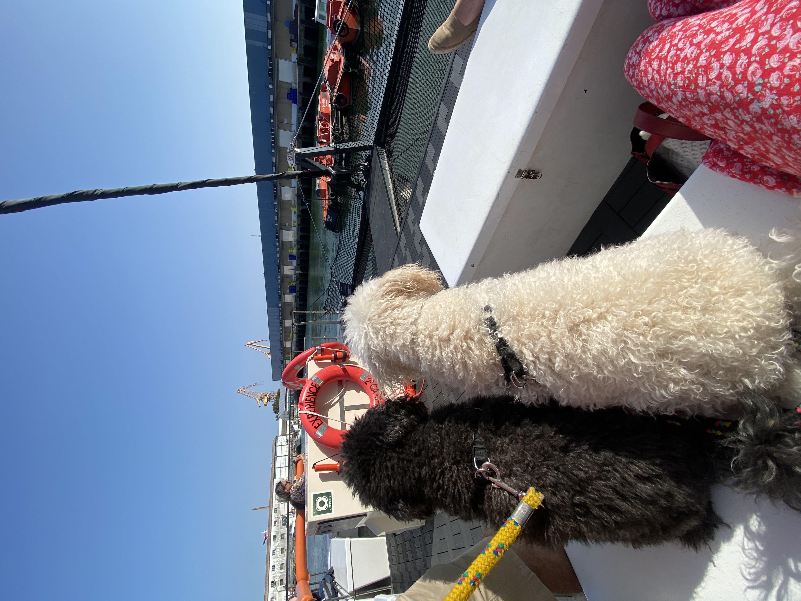

Granja Escuela
Trabajé en cuidado de animales y actividades educativas con niños.
Profesional y cariñosa con mascotas de todas las edades. Experiencia en cuidados diarios, alojamiento y acompañamiento en viajes.



Soy Sabrina, cuidadora de mascotas con años de experiencia atendiendo perros, gatos y animales en voluntariados. Responsable, puntual y con mucha paciencia. Me encanta conocer cada personalidad y adaptarme a las rutinas de cada hogar.
Haz click en una tarjeta para ver más fotos o videos.
Trabajé en cuidado de animales y actividades educativas con niños.

Apoyo en manejo y cuidados de caballos, limpieza y alimentación.

Atención a animales rescatados, limpieza de instalaciones y apoyo sanitario básico.
Puedes contactarme por email: sabrina@example.com — o por teléfono: +44 7700 900123